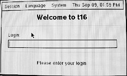
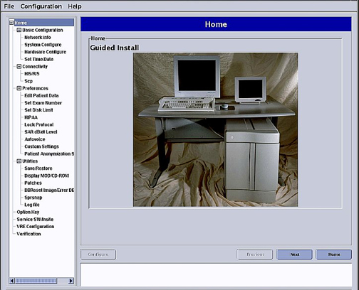
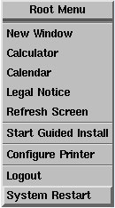
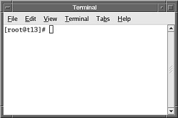

Operating Documentation
Direction 5500113, Rev# 3
Discovery MR750 3.0T Service Methods
Module Version 2.0, Version Date 7/1/08
Operating Documentation |
Most service functionality can be performed with operator-level privileges. However, you may need to perform some administrator-level functions that require root access. This document describes logging in as the root user and accessing options from the root desktop menu.
| NOTE: | Because root privileges allow you to make changes that can do irreparable damage to the system, it is advisable to log in as an operator-level user (for example, sdc(see System Startup and Shutdown)). |
When you power up the host computer and see the welcome login screen, log in with the user name: root and password: operator.
Illustration 1: Welcome Login Screen

Logging in as the root user automatically displays the Linux desktop and launches the Guided Install Starter window. Click [Yes] to invoke the Guided Install interface.
Illustration 2: Guided Install Interface

To restart the host computer, right-click on the Linux desktop to access the Root Menu and then select System Restart.
Illustration 3: Linux Right-click Root Menu

You can switch from a root user to an operator without shutting down the system. Right-click on the desktop to access the Root Menu and select Logout. Once you confirm that you want to log out, the welcome log in screen displays.
To access a C shell (Terminal) from the Linux desktop, right-click the desktop and select New Window. A Terminal window opens as shown in Illustration 4.
Illustration 4: C Shell Terminal Window

Open a C shell terminal window as described in Section 4. At the prompt, type shutdown -h 0. The shutdown process begins immediately.
You can access the Guided Install from the desktop at any time. To access the Guided Install from the Root Menu, right-click on the desktop and select Start Guided Install.